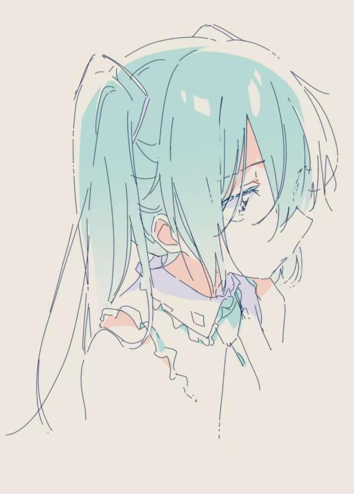
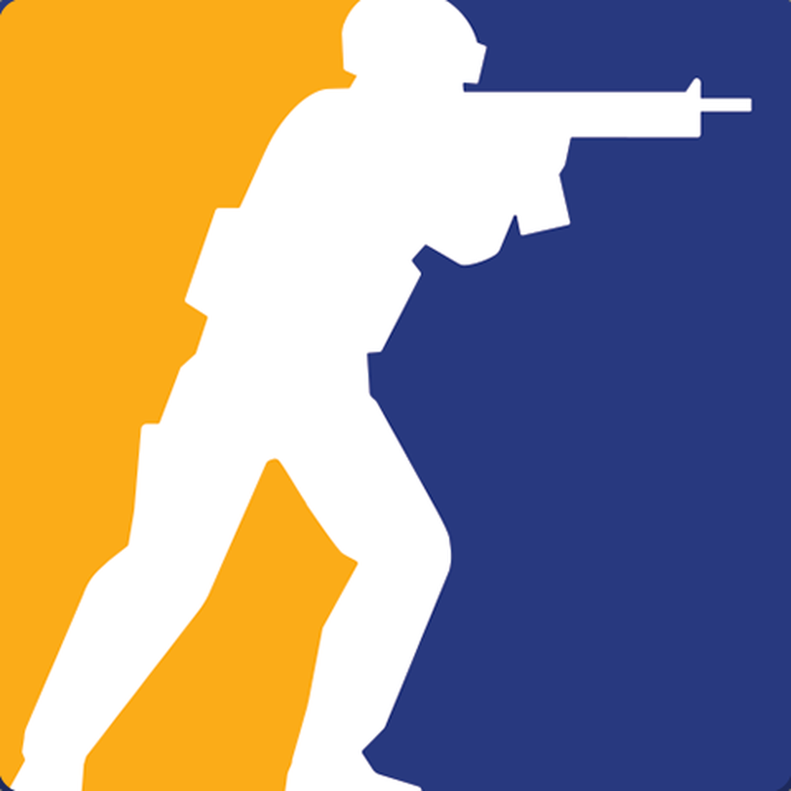
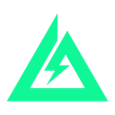

找到我
Contact · 点一下就能复制

孙浩阳 · 沈阳理工大学 计算机科学与技术
在学 C 和 Python，喜欢把想法做成能跑、能玩的东西。
About Me
Shy（孙浩阳），沈阳理工大学计算机科学与技术大一在读。来自陕西西安，跨越 1500 公里来沈阳上学。
中考前一个月，别人刷题，我看装机视频。中考后配件一件件点亮屏幕的那一刻，我掉进了计算机这个坑。
课内学 C，课外自学 Python。下一站：Linux 和嵌入式。
加入计算机协会，一起做项目、打比赛，把「喜欢折腾」变成「能做出东西」。
Skills · skills.c
Timeline
中考结束，自己挑配件、装机、点亮屏幕。从那天起掉进了计算机的坑。
从陕西西安到沈阳，跨越 1500 公里，正式开始系统学计算机。
猜数字（Python）、舒尔特方格（HTML/CSS/JS）、AI 科普视频，从写到能跑、再到能给别人玩。
从零写 HTML/CSS/JS，部署到 GitHub Pages，正式成为我在互联网上的第一个据点。
Projects
我的第一个 Python 小游戏：猜一个 1-100 的整数，程序提示大了或小了。
注意力训练小工具：按顺序点 1 到 N² 计时，支持 3×3 到 7×7，用 localStorage 记录最佳成绩。
HTML/CSS/JS 从零搭建，部署在 GitHub Pages——就是你正在看的这个。猜数字与舒尔特方格都直接嵌在页面里可玩。
用 AI 生成的科普短片，从记忆与「第一次」的密度解释时间感的变化。
Games · 又菜又爱玩


也玩过：星露谷物语 / 泰拉瑞亚 / 文明 6 / 巫师 3 / 黑神话：悟空 / 生化危机 …
Contact · 点一下就能复制